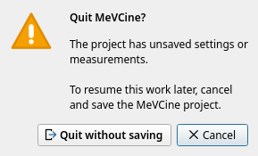

Troubleshooting
For teachers: MeVCine's messages, and what to do
The small problems of the lab (marking, refused length, times, export) are in the frequently asked questions. Here are the technical problems.
The video does not open
- The video does not open or probing takes more than two minutes.
- Copy the film to the workstation’s local disk, check that the transfer is complete and try playing its beginning and end. Probing can fail because of the recording, the storage device or the decoder.
- The message mentions FFprobe or FFmpeg.
- With the portable build, check for the
ffmpegfolder supplied beside the program. With a Linux package, check that both tools are installed. See Installing on Linux. - The HEVC (H.265) video is recognised but cannot be decoded.
- Try the MeVCine distribution with bundled FFmpeg. If you convert a copy, give it a new name and note the original capture rate. For example,
ffmpeg -i video.mov -c:v libx264 -pix_fmt yuv420p -an copy.mp4produces an H.264 copy. Check its frame times before taking measurements. - The status bar reports “Unreadable frame 57”.
- Tracking stops on that frame. Restore access to the recording and click Retry. Earlier measurements remain available. Once the frame is readable you can continue by hand.
- Moving backwards and forwards through 4K footage is slow.
- Try the local disk first. If you prepare a smaller recording for the class, resize a copy before calibration. For example,
ffmpeg -i video.mp4 -vf scale=1920:-2 -c:v libx264 copy.mp4resizes landscape footage.
The window does not open
- “This application failed to start because no Qt platform plugin could be initialized”
- The Qt libraries are incomplete. On Windows, the
pluginsfolder (withplugins\platforms\qwindows.dll) and theqt.conffile must be next tomevcine.exe: copy the complete folder again. On Linux, install the MeVCine package, or use the AppImage (see Installing). - Nothing happens on double-click (Windows)
- SmartScreen may have blocked the program: start it again, then More info › Run anyway. Also check that the antivirus has not quarantined it.
Files
- No window opens with Open a video… (Linux)
- MeVCine uses the desktop dialogs, otherwise Qt's. Meanwhile, drag the video onto the window, or start
mevcine video.mp4. - “Unrecognized file”
- The file was not written by MeVCine, or its header is damaged: it cannot be opened.
- “Unreadable project”
- If a coordinate pair is incomplete or contains unexpected text, MeVCine reports its line number. Retrieve the original project or a recovery copy. The session already on screen remains open.
- “Video not found”
- Keep the video with the project when moving it. If the video has been moved or renamed, select it when opening the project. MeVCine checks its fingerprint. For an older project without a fingerprint, check the video yourself before confirming.
- “Error while saving”
- The folder cannot be written to (write-protected or full stick, full network folder, permissions); the message gives the cause. A file that already existed stays intact. Choose another folder, for instance Documents.
- “Automatic backup impossible”
- The configuration folder cannot be written to (full disk, permissions). The work is no longer protected: save the project (File › Save the project…) elsewhere, then free some space or fix the permissions (see Settings).
The project has unsaved changes
To keep the axes, scale and marks, choose Cancel and then File › Save the project…. A Python copy or CSV supplies numbers for analysis. The .mevcine file lets you reopen the session.


An internal error, a crash
- “MeVCine internal error”
- The program met an unexpected error, or it crashed, and stops. The message says where the log is:
mevcine.log, in the configuration folder, with the date, the cause and, for a crash, the call stack. Send it to suite@sciences-physiques.net, with the video if possible. - Recovering the work in progress
- Restart MeVCine and choose File › Recover previous work…. If several backups appear, choose your video and session date. After an unexpected closure, check the marks from the last two seconds.
- “Error reading the configuration”
- The
mevcine.inifile is damaged: MeVCine starts from a fresh configuration. Nothing serious.